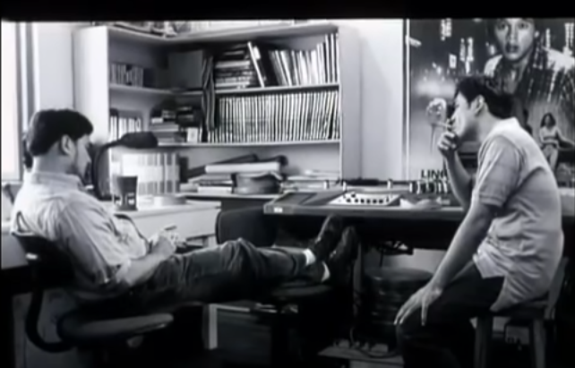
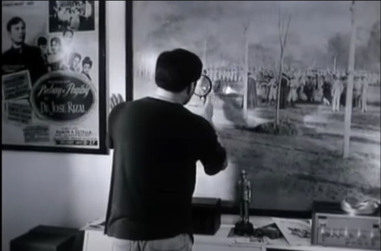
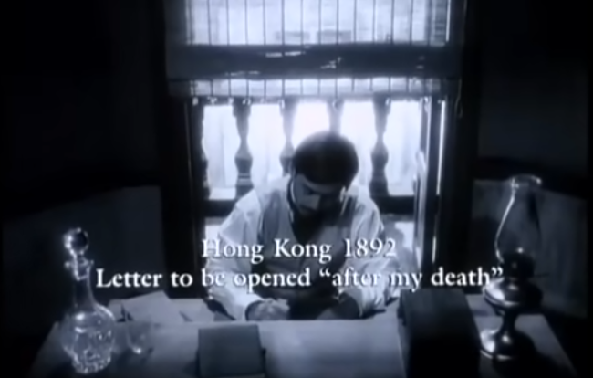
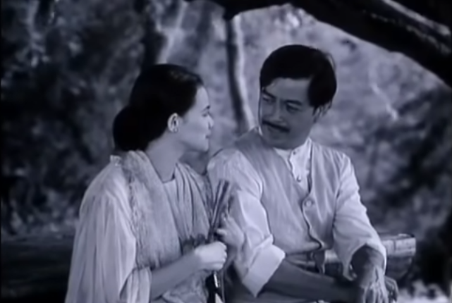
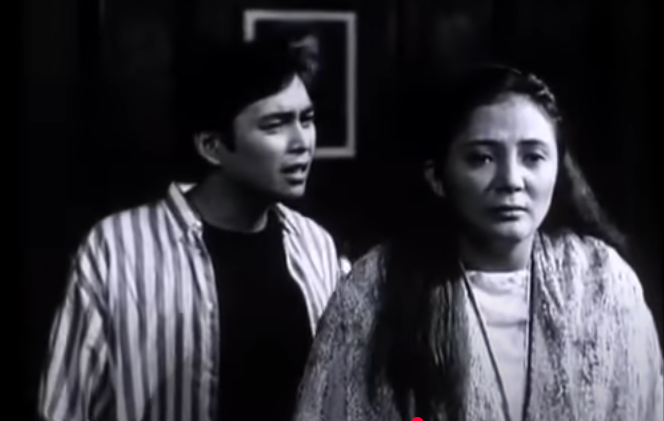
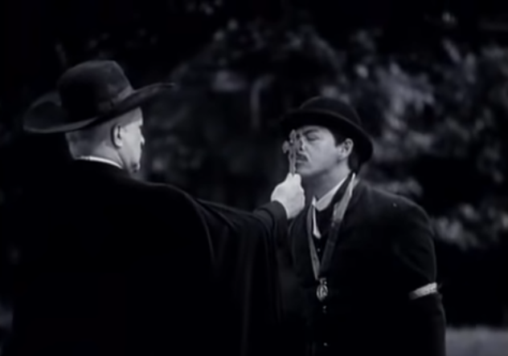
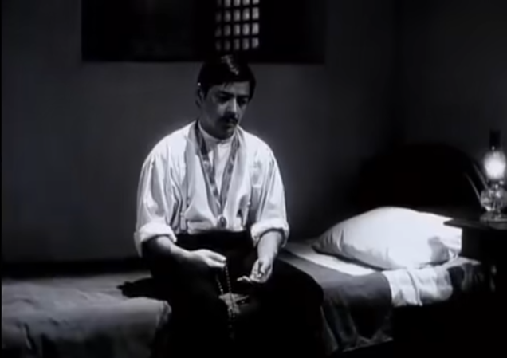
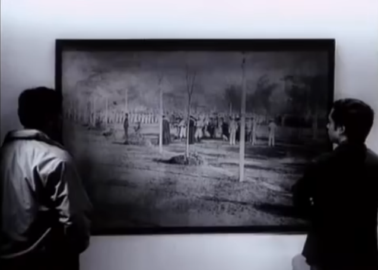

×

A bold reexamination of Rizal’s heroism and the retraction controversy
Time: 00:02:30 – 00:07:00
Time: 00:12:00 – 00:18:30
Time: 00:21:45 – 00:30:15
Time: 00:35:00 – 00:40:20
Time: 47:41-55:33
Time: 00:55:49 – 01:04:30
Time: 01:08:30 – 01:15:00
Time: 01:15:00 – 01:20:00
Time: 01:25:00 – 01:30:00